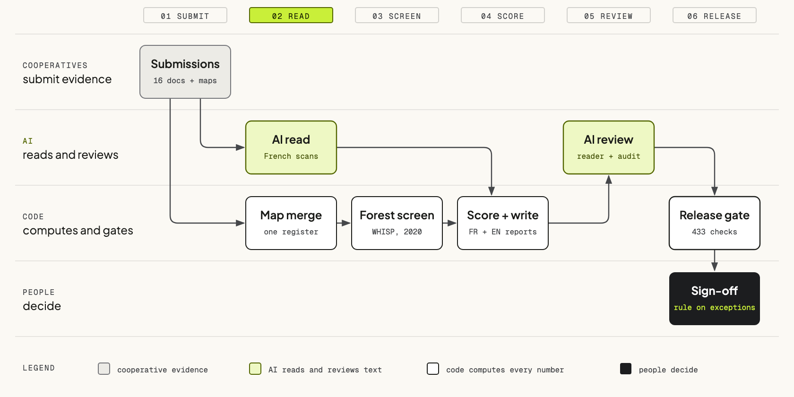

Associate Manager in Field Ops Data Services at Pula, Nairobi. I build the checks and the AI that read documents, images and maps, and I lead the teams that turn raw collection into data clients accept. Seven countries so far, on programmes from 10,000 records to 1.65 million farms.
Farms in a national coffee mapping programme in Uganda, with 1.51 million farmers. Every delivered file passed verification.
Farmer records delivered to a national agricultural agency in Ethiopia through the delivery system I built.
Parcel images and land documents read by the AI checks I built, at under one US cent per image.
Each cooperative had to submit its governance, traceability, environmental and social documents and a map of every member's farm. Most arrived as scanned French documents and maps that did not fit together, and new cooperatives kept arriving while the work was under way. I built the pipeline that turns them into scored reports in French and English, and rebuilds them in minutes when a new cooperative arrives.

AI reads every document page by page, including scans software cannot parse. No verdict ships on a document nobody read.
52 Python modules, built with an AI coding assistant, that rebuild every report in minutes. The full remaining run was costed at about $195 of API credit.
An AI reviewer briefed as a native Ivorian French reader cut its findings from 35 to 0 over six passes.
An independent AI audit found 28 defects that automated checks had passed, nine of them false sentences.
Every number comes from code, never the model. 433 checks gate each release; people rule on the rest.
Five lessons from running data quality for several programmes at once, across seven countries.
Most delivery disputes trace back to a standard nobody agreed. I set the bar with the client before work starts: what matters, what error is tolerable, and who signs off.
A process that depends on one person stops scaling. I hire for judgement, document and automate, then hand the work over and move to the next problem.
Quality problems collect where the field, the client and engineering pass work to each other, so that is where I spend my time.
A forecast is only useful while there is time to act on it. I put the numbers in front of leadership before the plan is locked.
AI pays off when the whole team uses it well. I train people, set guardrails, and keep a person accountable for every output.
Check frameworks on one shared core. For one national client the rules became a single decision document: 256 checks, agreeing with the client's own reviewer 95% of the time.
Vision models that read national ID cards, land certificates in three languages and registration photos, with people reviewing every disagreement. I build the review apps too.
The EUDR screening pipeline I built for Pula: boundary checks, overlaps and deforestation risk with WHISP and Earth Engine. Only farm geometry and record IDs leave our systems.
Surveys that validate answers as they are typed, acceptance testing for field apps, and pay tied to verified output. I specified the payments module in Pula's data platform.
A LinkedIn series on delivering data as a product. MSc Data Science, University of East London, in progress. Co-author of a 2026 paper in BMC Pregnancy and Childbirth.
When 98% of records fail, check what changedSeven countries, 2024 to 2026. Clients are described, not named.
| Programme | Country | Scale | Focus | When | Status |
|---|---|---|---|---|---|
| Farmer profiling for a national agency | Ethiopia | 460,000+ farmers delivered | National ID, land documents | 2026 | Ongoing |
| Coffee farmer mapping, next phase | Uganda | Target of 1 million farmers | Coffee, EUDR | 2026 | Ongoing |
| EUDR readiness for cocoa cooperatives | Côte d'Ivoire | Cooperative-level diagnostics | Cocoa, EUDR | 2026 | Ongoing |
| Drone yield study | Kenya | 170 farms over two seasons | Maize yield | 2026 | Starting |
| National farmer registry pilot | Guinea | 20,463 farmers, 23,507 farms | Rice, poultry | 2026 | Delivered |
| Farmer verification and EUDR screening | Nigeria | 19,642 farm maps | Oil palm, cocoa, EUDR | 2026 | Delivered |
| Farm mapping and quality checks | Botswana | Farm maps and weekly checks | Agricultural credit | 2026 | Delivered |
| Coffee farmer mapping, two programmes | Uganda | 1.51M farmers, 1.65M farms | Coffee, EUDR | 2024 to 2025 | Delivered |